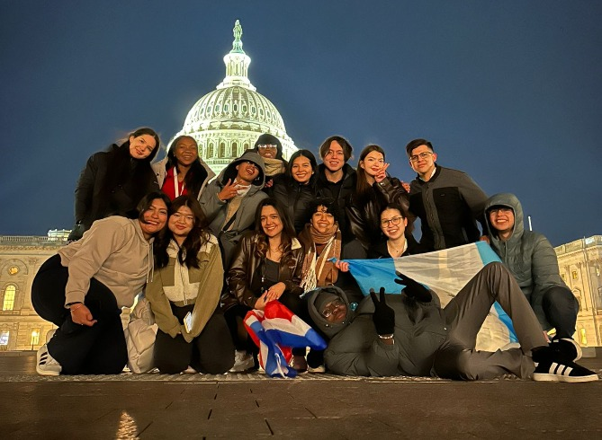
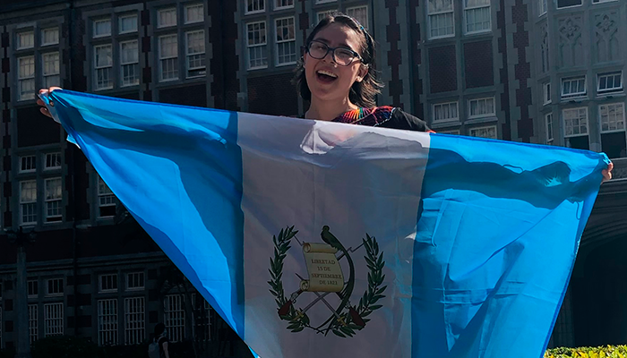
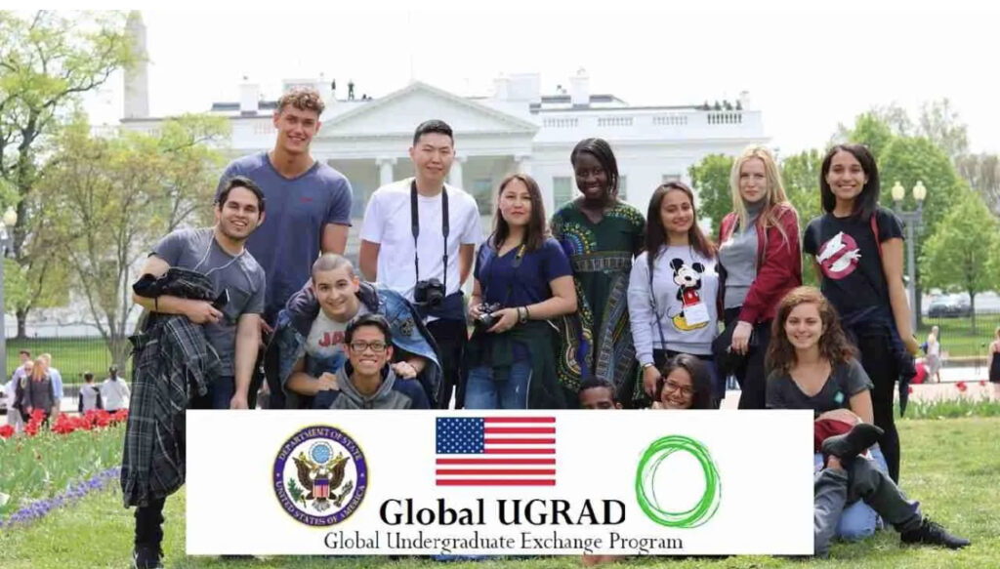

¿Qué son las becas extranjeras?
Las becas extranjeras son oportunidades académicas otorgadas por gobiernos, universidades, organizaciones o instituciones internacionales que permiten a estudiantes estudiar, investigar o realizar intercambios en otro país. Estas becas pueden cubrir gastos como matrícula, alojamiento, alimentación, seguro médico y, en algunos casos, transporte o una asignación mensual.
El objetivo principal de estas becas es promover el intercambio cultural, el desarrollo académico y la formación de profesionales con una visión global, fomentando así el liderazgo y la responsabilidad social, de manera que los participantes puedan aplicar sus conocimientos para mejorar e impulsar el desarrollo del sus comunidades al regresar.
Beneficios de obtener una beca internacional

- Educación de calidad: Permite el acceso a instituciones prestigiosas y métodos de enseñanza innovadores.
- Crecimiento personal: Fomenta la independencia, la adaptación y la confianza en uno mismo.
- Inmersión cultural: Permite convivir con diversas culturas, aprender idiomas y ampliar la perspectiva del mundo.
- Desarrollo profesional: Mejora el currículum, abre oportunidades laborales y crea redes de contactos globales.
- Contribución social: Muchos programas impulsan el liderazgo y el compromiso comunitario.
Requisitos generales para aplicar
Los requisitos pueden variar según la beca, pero por lo general incluyen:
- Ser estudiante activo o haber concluido estudios recientes.
- Tener buenas calificaciones (promedio mínimo entre 75 y 85, según el programa).
- Dominio del idioma del país destino, como inglés (TOEFL/IELTS) o pruebas internas.
- Ensayos o cartas de motivación, donde expliques por qué mereces la beca.
- Cartas de recomendación de maestros o empleadores.
- Pasaporte vigente.
- Participación en voluntariados y acciones solidarias (MUY IMPORTANTE).
- Completar el formulario de aplicación en línea.
- Participar en entrevistas o pruebas adicionales según el programa.
Proceso general para seleccion
Aunque cada programa es distinto, el proceso suele seguir estas etapas:
- Aplicación en línea: llenar formulario, adjuntar documentos y ensayos.
- Revisión de elegibilidad: verifican si cumples los requisitos académicos y personales.
- Evaluación de méritos: analizan tu perfil, liderazgo, voluntariado, logros y motivación.
- Entrevista virtual o presencial: para conocer tus metas y evaluar tu potencial.
- Selección final: se elige a los candidatos más completos y comprometidos.
- Asignación de país/universidad: dependiendo de la beca y tu perfil.
- Preparación para el viaje: talleres, orientación cultural o trámites de visa.
Más información

Programas de Becas
Conoce los programas de becas internacionales más famosos para estudiantes guatemaltecos.
Ver más
Experiencia UGRAD
Mi experiencia en el programa de intercambio para estudiantes universitarios Global UGRAD.
Ver más
Historias de Éxito
Conoce la historia de Jean Marco Portillo, estudiante de la UVG que realizó un intercambio académico en Alaska.
Ver más